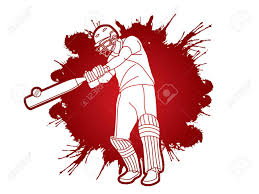
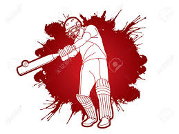

"INDIAN CRICKET PLAYERS"
Cricket is a popular bat-and-ball sport played between two teams, typically consisting of eleven players each. The game is played on a circular field with a rectangular 22-yard-long pitch in the center. Here are some key aspects of cricket:
Format:
* Test Cricket: The longest format of the game, with matches played over five days. Each team has two innings. . One-Day Internationals (ODIs): Limited-overs format with each team facing a set number of overs, usually 50, per inning. . Twenty20 Internationals (T20Is): The shortest format with each team facing a maximum of 20 overs per inning.Basic Rules:
A match involves batting and bowling innings for both teams. The team batting tries to score runs by hitting the ball and running between two sets of stumps, while the bowling team tries to dismiss the batsmen. Runs can be scored by hitting the ball and running between the stumps, hitting boundaries (four or six runs), or through penalties awarded by the umpires. The team with the most runs at the end of the match or the specified number of overs wins.Key Positions:
Batsmen: Score runs for the team by hitting the ball. Bowlers: Try to dismiss batsmen by delivering the ball to hit the stumps or induce mistakes. All-rounders: Players who excel in both batting and bowling. Wicketkeeper: Stands behind the stumps, collects deliveries from the bowler, and attempts to dismiss batsmen.
 Dismissals:
Bowled: The ball hits the stumps, dislodging the bails.
Caught: The batsman hits the ball, and it is caught by a fielder without the ball touching the ground.
LBW (Leg Before Wicket): The batsman is out if the ball, in the opinion of the umpire, would have hit the stumps but instead hits the batsman's leg.
>Run Out: A batsman is out if at any time while the ball is in play, they are out of their ground and their wicket is fairly put down by the opposing side.
Dismissals:
Bowled: The ball hits the stumps, dislodging the bails.
Caught: The batsman hits the ball, and it is caught by a fielder without the ball touching the ground.
LBW (Leg Before Wicket): The batsman is out if the ball, in the opinion of the umpire, would have hit the stumps but instead hits the batsman's leg.
>Run Out: A batsman is out if at any time while the ball is in play, they are out of their ground and their wicket is fairly put down by the opposing side.
Umpires and Referees: Umpires officiate on the field, ensuring that the game is played according to the rules. Referees oversee fair play and behavior, particularly in international matches.
International Cricket: Countries have national cricket teams that compete in international series, tournaments, and championships. The International Cricket Council (ICC) is the global governing body for cricket.
Domestic Cricket: Besides international cricket, most cricket-playing countries have domestic competitions, including first-class matches, List A games, and T20 leagues.
Popular Tournaments: Cricket World Cup: Held every four years for the One-Day International format. ICC World Test Championship: A championship for Test cricket. Indian Premier League (IPL): A popular T20 league featuring franchise teams. Cricket has a massive following worldwide, with millions of fans and players participating at various levels. The sport has a rich history, and its popularity continues to grow globally. To Know More About indian team members Click Here

 
